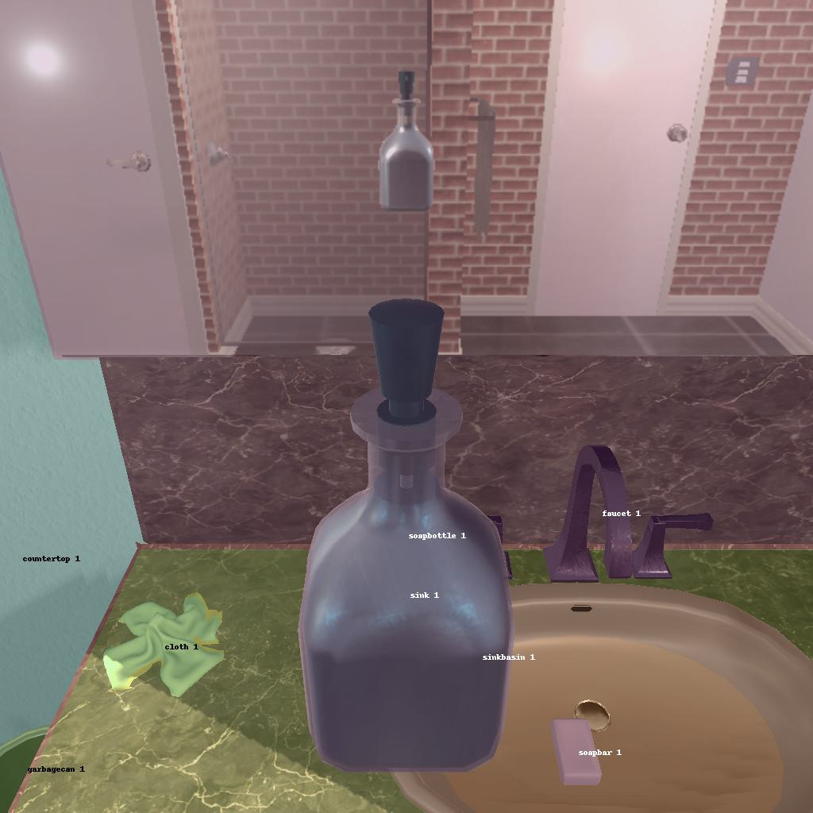

---------------------------------------------------------task: 27---------------------------------------------------------
--------------------------------------------------------------------------------------------------------------------------------------------------------------------
--------------------------------------------------------------------------------------------------------------------------------------------------------------------
Step:--------------------------------------------------------------------------18-------------------------------------------------------------------------------
----------------------------------------
VLM Prompt:
Image1:
Image2:
Image3:
**Instruction**
1. Analyze the provided image to identify all visible household objects, focusing on those relevant to the task description "find two soapbottle and put them in garbagecan."
2. Use the analysis of the image and the task hint "The agent must find an object of the desired type, pick it up, find the correct location to place it, put it down there, then look for another object of the desired type, pick it up, return to previous location, and put it down there with the other object." to answer the question: what is the most reasonable action in the choices for the task description "find two soapbottle and put them in garbagecan"?
4. Decide and write the answer using the template: The answer is: (i): , where i is the real number. If there is no desired object in the image, search every place based on **Initial Observation** to find the object. And if no one is exactly correct, choose a similar answer.
**Initial Observation**
You are in the middle of a room. Looking quickly around you, you can see countertop (1), sinkbasin (1-2), sink (1-2), garbagecan (1), drawer (1-2), toilet (1), handtowelholder (1)
**Answer Choices**
(1): go to countertop 1
(2): go to garbagecan 1
(3): go to drawer 2
(4): go to sink 2
(5): go to sinkbasin 2
(6): go to toilet 1
(7): go to handtowelholder 1
(8): put soapbottle 1 in/on sink 1
(9): clean soapbottle 1 with sinkbasin 1
(10): clean soapbottle 1 with sink 1
(11): clean soapbottle 1 with sink 2
(12): clean soapbottle 1 with sinkbasin 2
(13): examine soapbottle 1
(14): examine sink 1
**Answer**
Let's think step by step by following the instructions.
----------------------------------------
----------------------------------------
Original Response:
First, we need to identify all visible household objects related to the task "find two soapbottle and put them in garbagecan." From the images provided, we can see soapbottle 1 in front of sink 1 on countertop 1 in Image 1 and Image 3. In Image 2, we can see soapbottle 3 near faucet 2 on countertop 1.
Now, following the task hint, the agent must first find an object of the desired type (soapbottle), pick it up, and then find the correct location to place it (garbagecan).
Therefore, the most reasonable action from the choices given for the task description would be to go to the location where the soapbottle is visible. In this case, we can see soapbottle 1 on countertop 1, so the first action should be to go there.
The answer is: (1): go to countertop 1
----------------------------------------
----------------------------------------
>>> Refine Original VLM Response and Get Pure Action: go to countertop 1
----------------------------------------
-----------------------------------------------------------------
Running time: 15.497222423553467 seconds
Total Money: 17.842290000000002
-----------------------------------------------------------------
-----------------------------------------------------------------
Text Observation:You arrive at loc 0. On the countertop 1, you see a faucet 1, a cloth 1, and a soapbar 1.
-----------------------------------------------------------------
UNSUCCEED